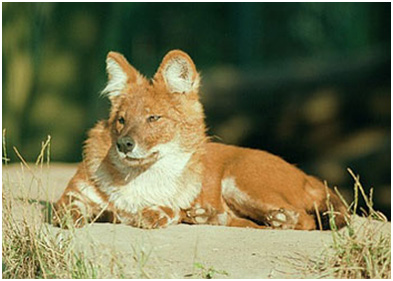
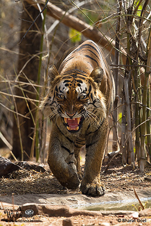
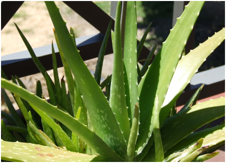
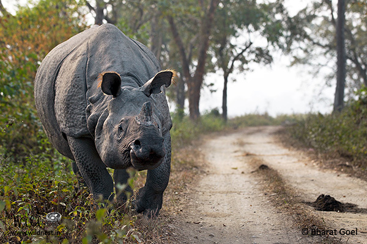

Rhinoceros is made of the same element
that is used for hair treatment Straight
hair is all the rage nowadays.
1. The Red Panda isn’t actually a panda

The red panda is a small cat like mammal that lives in the Eastern Himalayas. They are primordially arboreal, ie they spend most of their time up on trees, jumping from branch to branch and taking the casual nap. However, its name is quite misleading as it isn’t closely related to the giant panda (ailuropoda melanoleuca); but it wasn’t until the turn of the century that panda enthusiasts (also known as scientists) found out that red pandas form their own phylogenetic family alongside skunks and raccoons. What this basically means is that they resemble skunks and raccoons more than they resemble a giant black and white panda.
2. The Asiatic Wild Dog is as good a voice actor as Seth McFarlane
“Dhole” is the native term for the Asiatic Wild Dog found in the deciduous and tropical rain forest areas of India. It is quite a social animal that lives in a temporal pack of almost 40 animals. However, the most amazing ability of the dhole is the voices it can produce.
3.The roar of a Royal Bengal Tiger travels over a distance of 2 kilometers
The Royal Bengal Tiger is a beautiful subspecies that possesses a dazzling coat of yellowish orange with dark black stripes, and is a carefully selected candidate for the post of the national animal of India. Yes, most people are aware of this fact, but what they don’t know is that this sleek creature’s thunderous roar can easily cover a distance of two kilometers. If you don’t find that impressive, maybe you should consider that your voice can’t even reach your friend who’s sitting three desks away when you need a pen.
4. The Aloe Vera plant has more uses than your smartphone
Apart from being a complete badass in the sense that it can thrive in your garden even if you don’t water it for days, an aloe plant produces at least six antiseptics that can successfully defeat mold, bacteria, fungi and viruses. Research also says that the plant has potential to battle AIDS and cancer. And it’s free.
5. The horn of the Indian One Horned Rhinoceros is made of the same element that is used for hair treatment
Straight hair is all the rage nowadays. The hairstyle has some kind of charm that allures both ladies and gents- well not actually gents, but overly melodramatic teenage guys who listen to “Galliyan” all day- to adopt it. And top notch hair specialists use the exact component that makes up the Indian Rhinoceros’ horn for styling the hair – keratin.
TRENDING FACTS